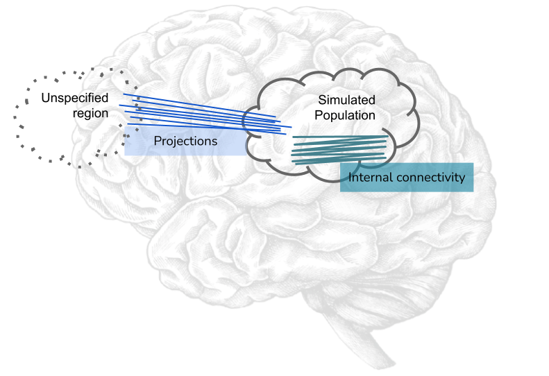
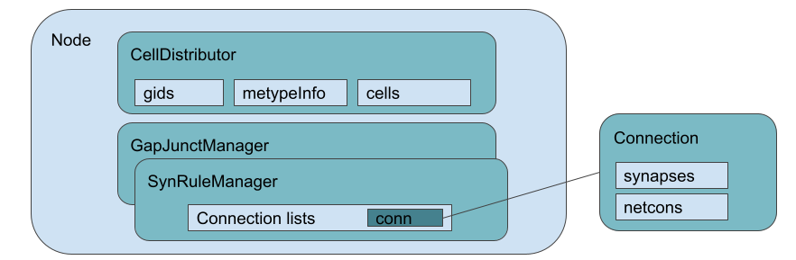
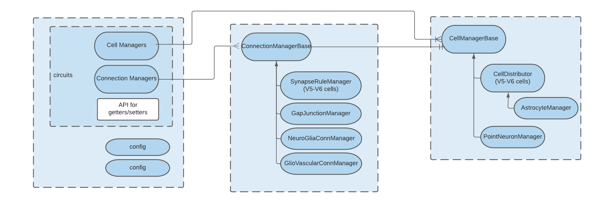
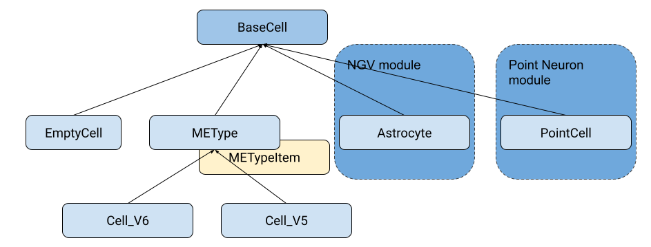
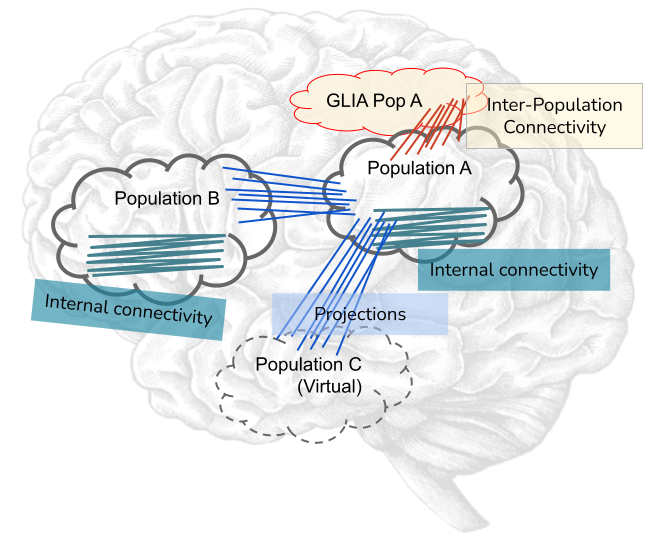
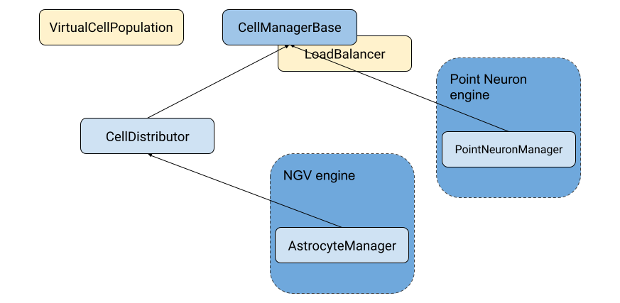
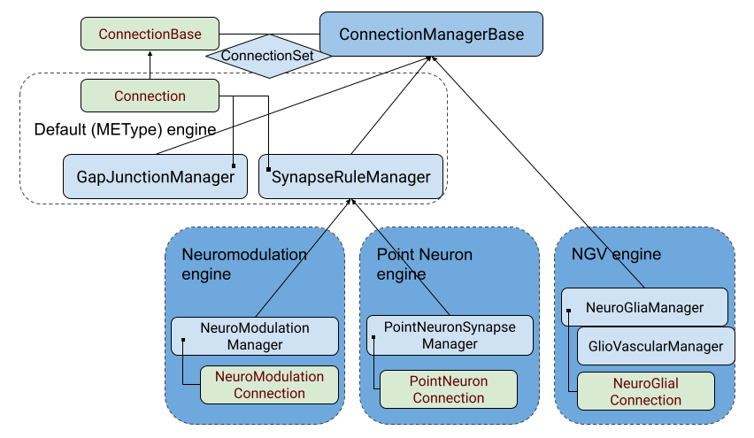
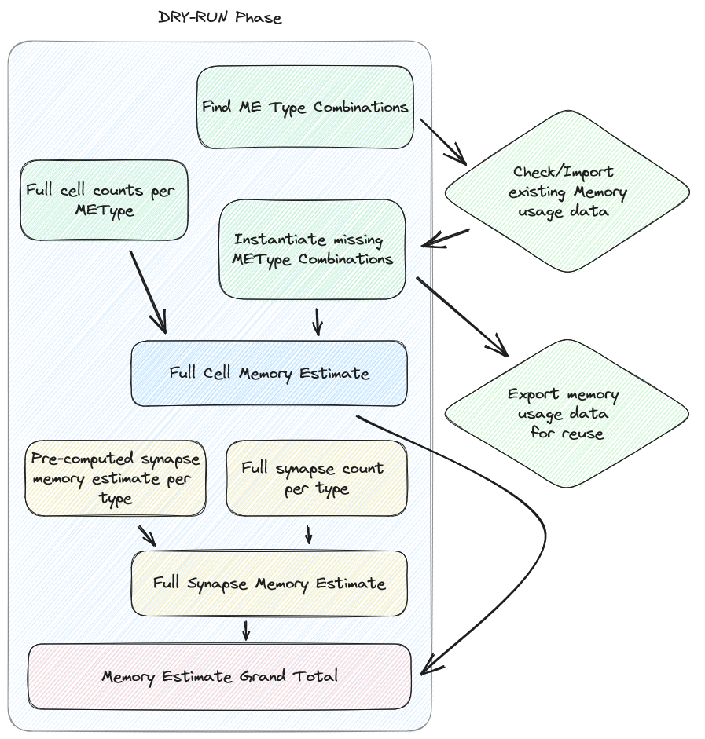

Neurodamus Developer Documentation¶
Historical Note¶
Neurodamus has evolved from a series of hoc scripts, the specific Neuron scripting language, used to setup simulations for the BBP specific use cases. These simulations, whose settings came from a BlueConfig file, typically featured a set of detailed neurons and connectivity among them.
The original Hoc version handled what we nowadays call a “single population”. The nodes (neurons) and associated edges (connectivity) came from BBP proprietary formats (.ncs and .nrn respectively) which didn’t feature any identification of the region. Neuron IDs were considered absolute and therefore, for the purpose of injecting stimulus from a simulated nearby region special connectivity had to be produced - the projections - which had their source ids artificially offset.
Consequently the software architecture was relatively simple. The top-level objects and their association is shown in the following diagram:
Notoriously, neurodamus has originally supported a single set of cells, handled by a single cell distributor. Similarly, it handled all connectivity in single Synapse and Gap-Junction managers. While several sets of connectivity could be loaded into SynapseRuleManager, they would always be considered as targeting local cells.
Need for Redesign
While the sight for multi-populations could hardly be seen in the horizon, the maintainability of these hoc scripts, with ever-more features, was getting to its limits. HOC is still a domain specific language and using it to implement a whole simulation software, although possible, had severe limitations, namely the lack a standard library so common language features have to be implemented from scratch or worked-around. Furthermore it was not possible to pass CLI arguments.
In 2018 Neurodamus-py started as a pilot project to evaluate the feasibility of progressively reimplementing higher-level parts of Neurodamus in Python, with the long-term objective of replacing it. One of the main reasons why it was done progressively, keeping hoc in the core, was to ensure absolutely the same results (the the bit!) than those previously created and eventually published.
Neurodamus Core Concepts¶
A lot has evolved since the original Neurodamus design, but for most part the core concepts still hold. We will initially go through the base entities:
Node
Cells
Cell Manager
Connections
Stimulus/Stimulus Manager
Targets
Replay
Reports
At a high-level design, Node is still the top-level manager of the circuits. Each circuit is typically set by two cell managers (for source and destination cell populations) and the connectivity among them.
This architecture can be better expressed by the following diagram:
Node¶
The Node class sits in the node.py file and contains all logic to run the simulation, gluing all major components together. With the concept of multiple populations (aka multi-circuit), Node took partially charge of this logic, aided by a new class in the same file CircuitManager, available via the circuits property.
While lower details of Node functions are mostly encapsulated to dedicated classes, it still provides API to control basically all major steps of the simulation. With this design advanced users can build a Node object (providing a config file), control all the steps and inspect the inner state by digging the hierarchy.
Node exposes the following public properties:
circuits - A CircuitManager object, which handles the several node and edge managers.
target_manager = The TargetManager object, and handling all targets
stim_manager = The manager of stimulus, interpreting and instantiating them
elec_manager = The electrode manager
reports = A list of Neurodamus Report hoc objects
Notice that the Node object still owns most the top-level objects, except the cell and synapse managers since they are now handled by the Circuits class.
Technical note: These properties are read-only objects for internal attributes _`prefixed. Besides them, many other internal attributes exist, but at least two are worth being mentioned: `self._base_circuit and self._extra_circuits. The first
Cells¶
A Cell is one of the central entities in Neurodamus. As referred initially, Neurodamus was born for BBP’s detailed cells use case, and that has always been internally supported. Until BBP v5 circuits, the cell class was defined in Cell.hoc (from neurodamus-core) while BBP v6 circuits would define its own cell hoc templates (/classes, one for each ME-type), largely based on Cell.hoc.
Morphologically detailed neurons are the heart of a Neuron simulation. Neurodamus will read the cells metadata from a node file in SONATA format and instantiate each individual cell by:
loading the morphology and instantiate the respective sections
instantiating all the due mechanisms per section, according to the cell’s morphological and electro-physiological type.
With some cells counting over 1000 sections, instantiating them on the simulator can be a relatively CPU-intensive step, easily taking over 1 second per cell.
With the requirement to handle new cell types, namely astrocytes and point-neurons, Neurodamus-py significantly redesigned the previous API so that cells follow a well-established hierarchy.
As one can see, there is a root cell type (BaseCell) every cell should inherit from, as it brings the bare common properties neurodamus requires when instantiating them. These properties come from the old interface, being: CellRef, CCell and the methods: connect2target() and re_init_rng().
Note: The intermediate cell classes are abstract. So even though they implement common functionality they are not supposed to be instantiated directly.
Two other things are worth mentioning. First, the original V5 and V6 cells, while they shared a great deal of logic, had their different handling in higher level routines. One encapsulated these differences in specific classes, while maintaining the shared functionality in a common base class for the morphologically detailed neurons - METype. Several cells can be instantiated from generic me-type data (METypeItem instances).
Secondly, we see some additional cell types as being part of modules. Indeed, to make neurodamus flexible, it supports modules/plugins, which can inclusively be dynamically loaded. Due to extensively different logic, both these cell types inherit directly from BaseCell and they must be handled by their own cell manager classes. To these modules implementing a new Cell, CellManagers and eventually ConnectionManager types we call Engine - more on this later.
For the record, Cell_V6 and the corresponding CellDistributor and SynapseRuleManager were also made components of a special engine: the METypeEngine, obviously built-in (find it in node.py).
Cell Managers¶
Cell managers is the resulting concept from the generalization of Neurodamus’ original CellDistributor. While CellDistributor.hoc used to handle all the loading and distribution of MeType cells, with the refactoring into Python and the design for multiple populations and different cell types, it became apparent that neurodamus needed a generic cell manager class which could be requested to instantiate cells and later query them (e.g. for creating connections). Please consider the following image.
Each instance of a cell manager will handle groups of cells (populations) which are potentially very different among them. Moreover notice the presence of GLIA cells, whose instantiation requires very different steps, and even a virtual population - a hollow population which nevertheless will require its individual cell ids (a.k.a gids).
As done for cells, cell managers follow an hierarchy as well, where the root is a generic CellManagerBase class:
Any cell specific cell manager should therefore inherit from CellManagerBase.
Please notice that CellManagerBase does actually implement pretty much all the logic around managing cells. However, a specific instance must exist for each cell type. Also, this abstract base class doesn’t contain LoadBalancing logic anymore. That whole processing has been extracted into a LoadBalance class, whose objects can be used to steer cell instantiation. Notice also a VirtualCellPopulation class. It basically offers the bare minimum API to be considered a cell manager, but by far lighter than a full cell manager.
CellManagerBase specifies the following properties:
Class properties, which should be overridden in the subclasses:
CellType: The default cell class this manager handles.
_node_loader: The default loader function for nodes (cell metadata)
Instance properties:
target_manager: The target manager
local_nodes: The metadata for the local cells, instance of NodeSet
total_cells: Total number of cells of this population (across all ranks)
cells: The local cell objects (instances of cls.CellType)
gid2cell: A dictionary mapping gids to the cell object
pc: The underlying Hoc ParallelContext object
population_name: The name of the Node population. Older formats (like mvd3) which don’t provide a population name, have this property as an empty string.
circuit_target: The name of the original target/sonata nodeset selecting the cells.
circuit_name: The unique name of the circuit (set in BlueConfigs or automatic (Sonata))
is_default: Whether this manager handles the main/base node population (not offset)
is_virtual: Whether the population is virtual, i.e. cells are not instantiated, typically for the source of projections.
connection_managers: A dict of connection managers whose source population is us.
Methods:
load_nodes(): loads the nodes (cell metadata), deferring to one of the two internal routines, either _load_nodes or _load_nodes_balance (the latter is used if there is load balance).
finalize(): instantiates the cells local to this rank. This process is composed of four phases, most in its own method: _instantiate_cells, _update_targets_local_gids, _init_cell_network and clear cell info.
record_spikes(): will basically do spike_record on each cell and return the spikevec/idvec Vector to the caller.
register_connection_manager(): Associates a given connection manager with this node manager, the association field being the connectivity source population.
NOTE: If you are familiar with the original hoc implementation, you may notice that cell manager `finalize` now does cell instantiation, whereas originally it happened right after loading the cell metadata (from .mvd). This change in design was required due to multiple-populations. One must know all cell gids from all circuits at once so we can compute final simulation gids (with offsets) and then proceed to cell instantiation and networking with the right ids.
Connection Manager¶
Connection managers handle connectivity (aka synapses/edges) in a circuit. As mentioned earlier, it evolved from SynapseRuleManager interpreting connectivity rules in a single circuit to a generalized manager of connectivity either within a single cell population (internal connectivity), or between two populations (src->dst).
Similar to the previous classes, significant refactoring occurred to extract common functional blocks to an abstract base class, in this case ConnectionManagerBase. Such change allowed, e.g. to get completely rid of the code redundancy between SynapseRuleManager and GapJunctionManager, to the point the latter’s initial implementation was basically a wrapper.
ConnectionSet
From the diagram we see the several implementations of connection managers, namely several as part of new engines. At the very least the subclassing needs to be done to override class properties identifying the connection type they handle, akin to cells to the cell manager. However, in this case, a connection manager will hold not connections directly, but groups of connections - ConnectionSet. This class is basically a container which a few extra functions to add or find connections, and multiple can exist for the same Manager in case connections come from different sources with eventually different random seeds. However, in practice, only on exceptional cases (like support for old projections files) we will have more than one ConnectionSet.
Load Balance¶
Due to the differences in cells and the number of connections among them, cells may incur very different CPU loads. For that reason Round Robin cell distribution is hardly optimal and Neurodamus provides load balancing facilities.
The way this functionality is plugged in Neurodamus is conceptually simple: one can provide a LoadBalance object to the cell creation top-level routine: node.create_cells. This object can be built by another top-level method: node.compute_load_balance. Here one basically takes into account the load balance mode requested by the user and do a dummy circuit instantiation so that cells’ complexities can be evaluated and, with the help of Neuron, derive an optimized cell distribution arrangement.
LoadBalance class instances (in cell_distributor.py) are created for the current system (CPUs) and circuit (node files). From this point one can load or generate load balance information by targets.
Given the heavy costs of computing load balance, some state files are created which allow the balance info to be reused.
cxinfo.txt: This file tracks the “circuit” and target being simulated for which there is load balance done. If the user changes the circuit (node file) then all load balancing is invalidated and a new full loadbalance is required. If the simulated target changes (but not the circuit) then
In case the target is in the file then load balancing info is reused
Otherwise we check if the target is a subtarget of any other load balanced target -> if yes then the load balance is derived, otherwise full instantiation is required
NOTE: For the support of multi-population load-balance, this file is being dropped, as in the new scheme many load-balances (one per circuit) can coexist, created in different directories.
cx_{TARGET}#.dat: File with complexity information for the cells of a given target This file is reused in case the simulation is launched on a different CPU count, and it can be used to derive cx files for sub targets.
cx_{TARGET}#.{CPU_COUNT}.dat: The actual load-balance file assigning cells/pieces to individual CPUs. It can only be reused for the same target and CPU count.
NOTE: Even though the cx_{TARGET}#.{CPU_COUNT}.dat has the cpu assignment, it goes hand-in-hand with cx_{TARGET}#.dat which contains information about the cells constitution and eventual split. Neuron actually enforces this duality and we cannot change suffixes, so bear that in mind.
Internal API¶
The LoadBalance class provides API to verify, load and (re)generate load balances for a target. Indeed public API represents exactly these 3 cases:
valid_load_distribution(self, target_spec): Verifies if load balance for the given target exists according to this instance nodes file and CPUs. It may generate the CPU assignment file automatically and it will also try to derive the cx files from other load-balanced targets. In all these happy paths it will return True, whereas a False informs the user he must take the long route of generating load balance data from scratch.
load_balance_info(self, target_spec): Reads the load balance information for a target from disk (it must exist), returning a BalanceInfo hoc object.
generate_load_balance(self, target_spec, cell_distributor): This heavy-duty context manager helps the user creating a new load balance. In the body of the context he should instantiate the nodes and synapses having an impact in the load. Is it engineered as such so that both preparatory actions (like creating mcomplex) and post-actions (like evaluating and saving cell complexity) are executed in order in a single call:
with lbal.generate_load_balance(t1, cell_manager): cell_manager.finalize() conn_manager.create_connections()
Dry Run¶
A dry run mode was introduced to help users in understanding how many nodes and tasks are necessary to run a specific circuit. This mode can also be used to improve load balancing, as it generates an allocation_r#_c#.pkl.gz (where r and c are the ranks and cycles respectively) file which can be used to load balance the simulation.
By running a dry run, using the –dry-run flag, the user will NOT run an actual simulation but will get a summary of the estimated memory used for cells and synapses, including also the overhead memory necessary to load libraries and neurodamus data structures. A grand total is provided to the user as well as a per-cell type and per-synapse type breakdown.
At the end of the execution the user will also be provided with a suggestion on how many nodes to use in order to run the simulation with the given circuit on the given machine. Keep in mind that this is just a suggestion and the user is free to use a different number of nodes if he/she wishes to do so. The suggestion is based on the assumption that the user wants to run the simulation on the same kind of machine used to run the dry run. The suggestion is also based on the assumption that the user wants to use all the available memory on each node for the simulation. The node estimate takes into account the memory usage of the cells and synapses as well as the variable usage of memory “overhead” that is fixed for each rank but varies depending on the number of ranks used.
In this paragraph we will go a bit more into details on how the estimation is done.
Below you can see the workflow of the dry run mode:
First of all, since memory usage of cells is strongly connected to their metypes, we create a dictionary of all the gids corresponding to a certain metype combination. This dictionary is then crosschecked with the one imported from the external cell_memory_usage.json file, which contains the memory usage of metype combinations coming from a previous execution of dry run on this or any other circuits. As long as the cell_memory_usage.json file is present in the working directory, it will be loaded.
If the metype combination is not present in the external file, we compute the memory usage of the metype combination by instantiating a group of (maximum) 50 cells per metype combination and then measuring memory usage before and after the instantiation. The memory usage is then averaged over the number of cells instantiated and the result are saved internally and added to the external cell_memory_usage.json file. Any combination already present in the external file is simply imported and is not instantiated again in order to speed up the execution. One can simply delete the cell_memory_usage.json file (or any relevant lines) in order to force the re-evaluation of all (or some) metype combinations.
The memory usage of synapses is instead estimated using a pre-computed look up table, which is hardcoded in the SynapseMemoryUsage class. The values used for this look up table were computed by using an external script to instantiate 1M synapses of each type, each with 1K connections, and then measuring the memory usage before and after the instantiation. The memory usage is then averaged over the number of synapses instantiated. The script used to perform this operation synstat.py is available for the user and is archived in this repo in the _benchmarks folder.
Having these pre-computed values, we just need to estimate the amount of synapses of each type and multiply it by the corresponding memory usage value. Even in this case we have adopted a sample-based approach. First of all, we filter out any gids that have already been counted (which can happen when the same gid is part of the target in several synapse_override blocks). Then we sample synapse counts of the circuit in progressively bigger blocks. This technique avoids exhausting memory and scales well, enabling sampling over very large circuits in a short time, typically a few minutes for millions of cells.
The parameters of the sampling are as follows:
Block start length: 5000, increasing at a rate of 10% at each iteration
Count synapses for each block: 100 cells of the block (taking advantage of data locality)
Finally, extrapolate for the whole block and add to global metype estimate.
Having estimated the number of synapses for each metype, we can finally compute the memory usage of synapses by multiplying the number of synapses by the corresponding memory usage value.
Apart from both cells and synapses, we also need to take into account the memory usage of neurodamus itself, e.g. data structures, loaded libraries and so on. This is done by measuring the RSS of the neurodamus process before any of the actual instantiation is done. This value, since it’s averaged over all ranks that take part in the execution, is then multiplied by the number of ranks used in the execution.
The final estimated memory usage for each METype is also saved as a file in the working directory called memory_per_metype.json. This file is currently not used in the dry run mode but it’s saved for future reference and to speed up the distribution of cells in future versions of Neurodamus.
On top of this we also need to consider the memory usage of the simulation itself. Unfortunately at the moment there are no easy ways to estimate this value, so we have opted for a simple heuristic approach. We assume that the memory usage of the simulation is proportional to the memory usage of the cells and synapses. From tests on a wide variety of circuits we’ve seen that the simulation memory usage is typically between 1.5 and 2.5 times the memory usage of the cells and synapses. We’ve opted for the more conservative value of 2.5 times the memory usage of the cells and synapses. The simulation estimate is not considered for the load balancing part of the dry run since we assume that it’s proportional to the memory usage of the cells and synapses and it’s just used for the suggestions of nodes to use in the simulation and the relative target ranks (more on this later).
The final result is then printed to the user in a human readable format together with an estimate of the number of nodes needed to run the simulation on the same machine used to run the dry run.
Dry Run Memory Load Balancing¶
The dry run mode also provides a memory load balancing feature. It helps balance the memory usage of the ranks of the simulation, so that the user does not incur easily in out-of-memory errors.
The workflow of the memory load balancing is as follows: for each cell in the circuit we have an estimate of both the memory load of the cell itself based on their METype and the amount of synapses that each METype has on average. With this information we can have a good estimate of the memory load of each gid in the circuit.
We’ve opted for a greedy approach to distribute the gids in order to keep the implementation simple and fast. The algorithm is as follows:
Sort our ranks in a heap so that the emptiest rank is always at the top
Assign gids in batches of 10 to the emptiest rank
Rince and repeat until all gids are assigned
The user can specify the number of ranks to target using the –num-target-ranks flag in the CLI of neurodamus. The default value is 40. The allocation dictionary, containing the assignment of gids to ranks per each population, is then saved to the allocation_r#_c#.pkl.gz file in a pickled gzipped format.
Now that the allocation_r#_c#.pkl.gz has been generated, the user can load it in the main simulation and use it to load balance the simulation. The user can do this by using the –lb-mode=Memory flag in the CLI of neurodamus. During the execution Neurodamus will check if the amount of ranks used in the simulation is the same as the amount of ranks used in the dry run. If the amount of ranks is the same, the allocation dictionary will be loaded and used to load balance the simulation. If the amount of ranks is different, neurodamus will redistribute the gids on-the-fly using the same greedy algorithm used in the dry run.
This way the exact gids that were assigned to each rank in the dry run will be assigned to the actual simulation, possibly avoiding out-of-memory errors.
Dry run and multicycle simulations¶
The dry run mode can also be used in conjunction with multicycle simulations. In this case the user can specify the number of cycles to run in the dry run using the –modelbuilding-steps flag in the CLI of Neurodamus along the –dry-run flag.
In this case the distribution of cells happens not only along the ranks but also along the cycles. Cycles and ranks are treated as equally important “buckets” and the greedy algorithm is the same as before.
Similarly to the ranks-only distribution, the allocation dictionary is saved to the allocation_r#_c#.pkl.gz file and can be used in the main simulation to load balance the simulation using both the –lb-mode=Memory and –modelbuilding-steps flags in the CLI of Neurodamus.
Development¶
You can find more information on the page How to develop / use a custom Neurodamus-py.